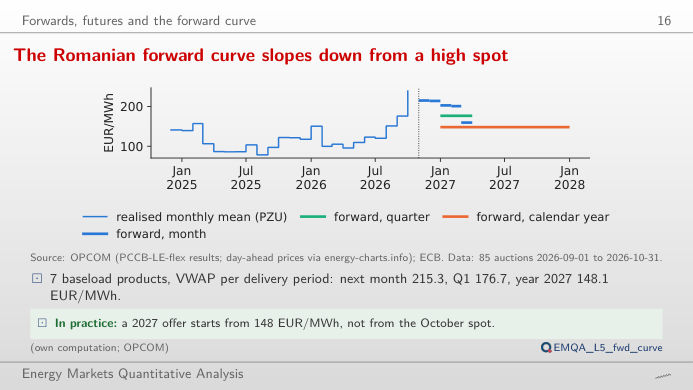
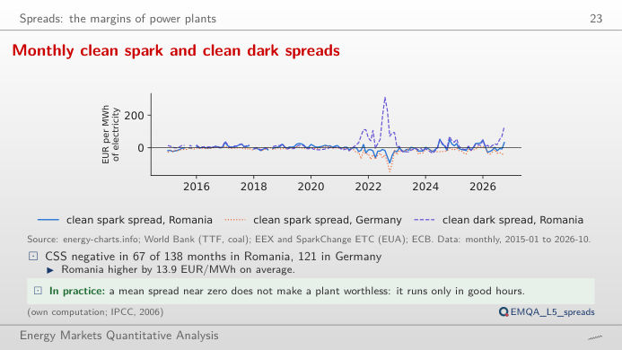
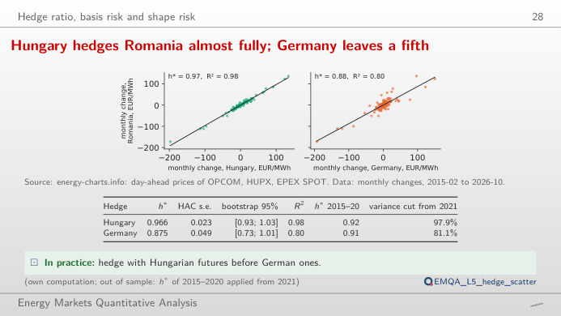
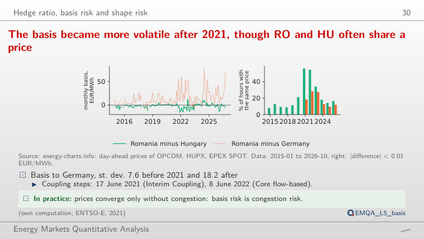
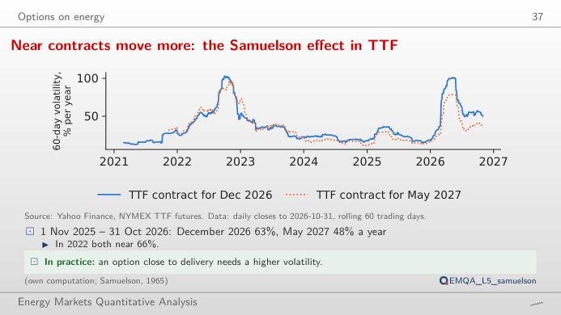
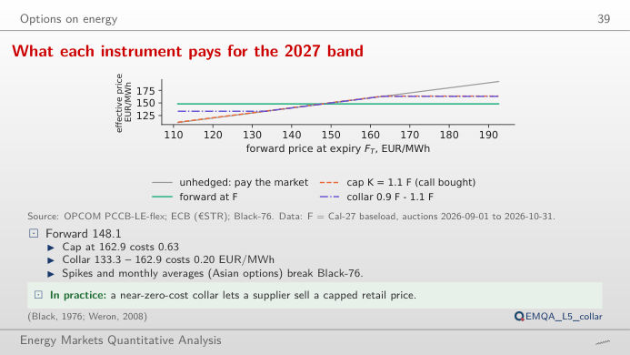

The slide of the lecture is on the left, the same figure on the right, recomputed in your browser from the course data (data/clean) when you move a control. The ▶ button moves the main parameter step by step. Under each figure: a readout, a question for the room and the Quantlet with the code of the chart.
Forwards, futures and the forward curve · Spreads: the margins of power plants · Hedge ratio, basis risk and shape risk · Options on energy
Forwards, futures and the forward curve
The Romanian forward curve slopes down from a high spot

Answer
Not exactly. A forward price is the expected spot price plus a risk premium, and part of the gap is seasonal: November and December 2026 traded at 215.33 and 214.27 EUR/MWh, the first quarter of 2027 at 176.69 and the whole year at 148.12, which also averages the cheap solar summer. Move the slider back: in 2022 the curve sloped down from a crisis spot, and the Cal-23 product (calendar year 2023) traded at up to 509.18 EUR/MWh, while 2023 delivered 103.74 EUR/MWh on the day-ahead market.
Spreads: the margins of power plants
Monthly clean spark and clean dark spreads

Answer
The count falls, because a higher efficiency lowers both the fuel cost and the carbon cost per MWh of electricity: clean spark spread = p − gas/η − (0.202/η)·EUA. At 0.58 the count falls from 67 to 29 months. The clean dark spread of coal does not change with the gas slider: the switch between gas and coal depends on the relative cost, not on the price of power alone.
Hedge ratio, basis risk and shape risk
Hungary hedges Romania almost fully; Germany leaves a fifth

Answer
Yes: h* = 0.875 with R² = 0.80, against R² = 0.98 for Hungary. The hedge ratio is h* = ρ·σ_RO/σ_F; Romania and Hungary are coupled and often share the same price, while Germany is farther away in the grid and its price moves partly for other reasons (wind, solar, its own interconnections). The variance left after the hedge is 1 − R²: about 2% with Hungary and about a fifth with Germany.
The basis became more volatile after 2021, though RO and HU often share a price

Answer
More volatile: the standard deviation of the monthly RO–HU basis rises from 2.82 EUR/MWh before 2021 to 5.77 EUR/MWh from 2021, and that of RO–DE from 7.61 to 18.23 EUR/MWh. At the same time Romania and Hungary still share exactly the same price in many hours (the right panel): a basis that is usually zero but occasionally large is the typical risk left by a cross-border hedge.
Options on energy
Near contracts move more: the Samuelson effect in TTF

Answer
This is the Samuelson effect: shocks to supply and demand (storage, weather, cargoes of LNG, liquefied natural gas) mostly affect the price for delivery soon, and are expected to fade before a distant delivery month. As expiry approaches, the futures price behaves more and more like the spot price, and its volatility rises. In 2022 the difference was small (66.1% against 66.8%): in a crisis even distant months moved as much as the front.
What each instrument pays for the 2027 band

Answer
The cap (a call with strike 162.93) costs 0.63 EUR/MWh, about 5,500 EUR for 1 MW over a year; selling a put with strike 133.31 (0.43 EUR/MWh) brings the collar to 0.20 EUR/MWh. The buyer gives up the gains below the floor in exchange for a cheaper cap. Raise σ to 50% (close to the volatility of near TTF contracts): the at-the-money call rises to 10.33 and the collar to 0.88 EUR/MWh, and the call and the put at K = F stay equal, as put–call parity requires (C − P = e−rT(F − K)).
Forward trades: OPCOM (Romanian power exchange), PCCB-LE-flex and related forward markets, baseload ("banda") products, prices converted to EUR/MWh at the ECB (European Central Bank) EUR/RON rate. Day-ahead prices: OPCOM PZU, HUPX, EPEX via energy-charts.info. TTF (Title Transfer Facility) gas: World Bank monthly series and single futures contracts; EUA (EU Allowance) carbon prices: EEX auctions; coal: World Bank (South Africa, Richards Bay); €STR (euro short-term rate): ECB. Monthly averages only for complete months. Data to the cut-off of the lecture (31 October 2026).